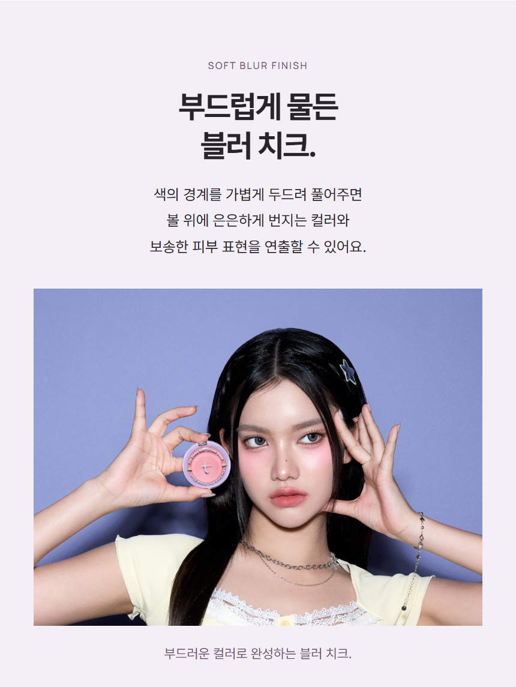
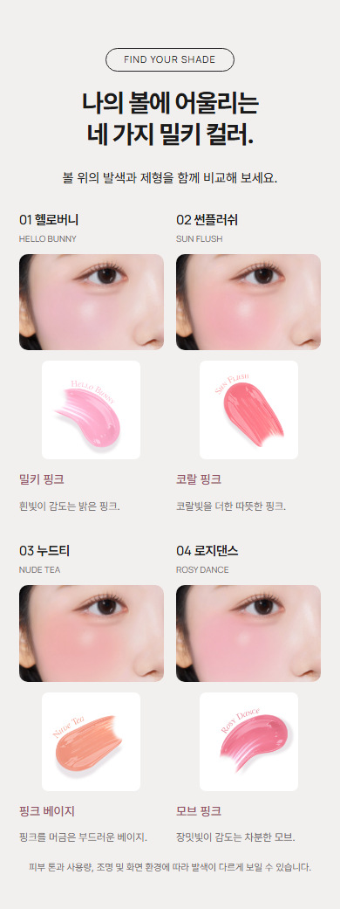
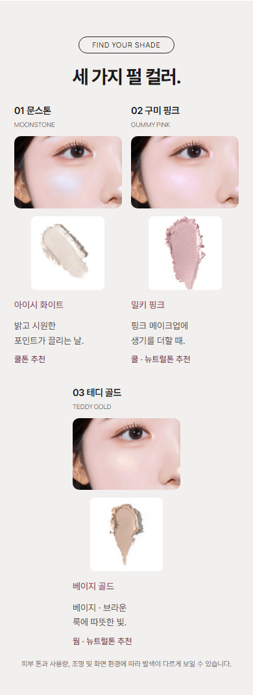
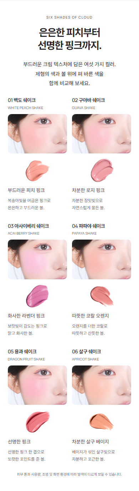

2026.10.19 · 검토 방향 반영본 · 최종 디자인 승인 전
모아 원본으로 복원하고,
기존 탐뷰티 발색 형식에 맞췄어.
제작 전 검토한 방향을 적용했습니다. 모델 사진은 기존 촬영 원본을 사용하고, 발색 비교는 밀키치크 V12와 최종 하이라이터를 기준으로 정렬·비율·간격을 맞췄습니다.
모아 원본 적용
얼굴과 양손의 손가락, 제품이 모두 보이는 상단 기준 4:3 구도입니다. 사진 픽셀과 색감은 그대로 두고 하단 몸통만 프레임 밖으로 배치했습니다.

같은 390px 화면에서 비교
제목의 번호와 이름을 한 줄로 묶고 왼쪽으로 정렬했습니다. 사진은 약 3:2 가로 프레임이며, 모서리와 카드 간격도 기존 상세와 같습니다.



반영 기준과 확인 결과
| 구분 | 반영 내용 |
|---|---|
| 모델 | 기존 모아 촬영 사진. AI 모델컷 제외, 얼굴·피부·발색 재가공 없음. |
| 발색 사진 | 기존 6색 볼·제형 원본 유지. 채도나 노출을 올리지 않음. |
| 비교 형식 | 2열, 2812:1870 사진 비율, PC 간격 48/24px·모바일 30/14px. 모서리 PC16px·모바일10px. |
| 제형 이미지 크기 | 이전의 과도한 크기 반려를 고려해 카드 폭45% 유지. 단순히 기존 상세의68%를 복사하지 않음. |
| 기존 구성 | 히어로·크림투파우더 영상·성분·사용법·마무리·공식 정보 유지. |
320·390·600·860·1440px에서 이미지 로딩과 가로 넘침을 확인했습니다. 390·860px에서 기존 두 상세와 사진 폭·높이·카드 간격을 직접 비교했고 일치했습니다.
검토 과정: 원본/기존 상세 대조 → 독립 검토 → 관찰 오류와 근거 부족 의견 제외 → 해당 구간 반영 → 실제 화면 재확인. 기술 확인은 디자인 승인을 대신하지 않습니다.